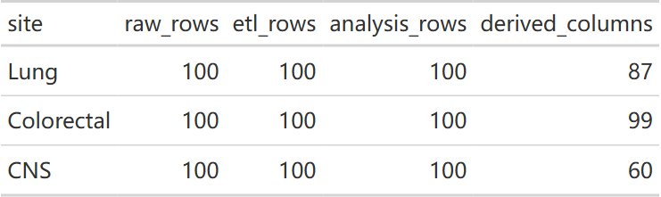
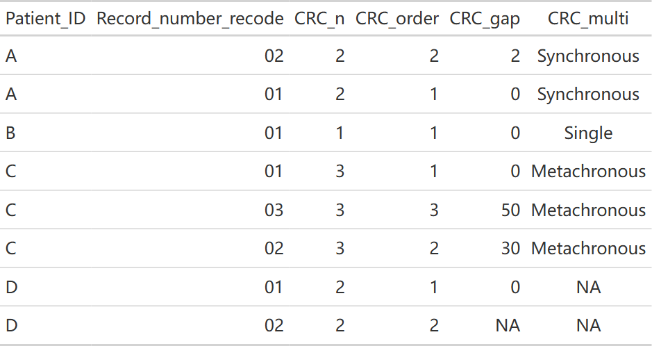
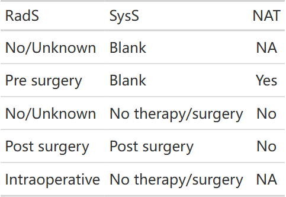
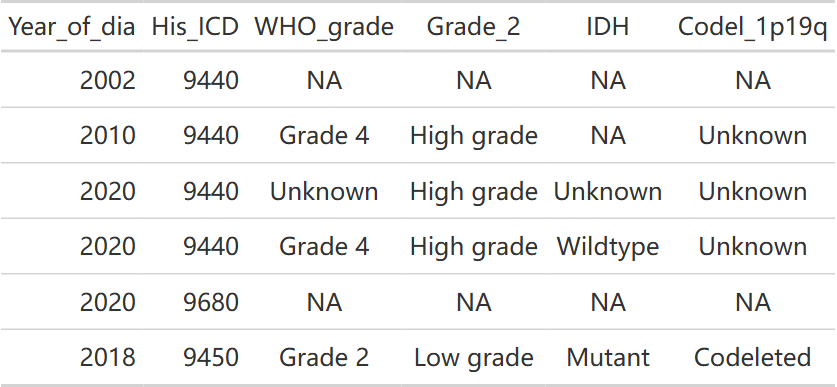

seerR 笔记
seerR 把 SEER 导出字段整理为分析变量。先按文件实际 schema 选择入口，再检查输出编码、缺失及分析单位；同名列或成功返回并不说明两个年度的导出文件可以混用。
2026-10-17 按已推送 seerR 82b0960、UtilsR f426bc0，在 Windows / WSL R 4.4.3 实际执行本页两套包内样例及合成边界例。包内样例用于接口演示，不代表本文建立了研究队列；原有 功能模块图 保持其历史快照。
选择流水线与 schema
甲状腺入口为 seer_thyroid_pipeline(data, schema=...)；schema 默认 "2025"，2026 导出须显式选择 "2026"。它依次完成字段选择、组织学、分期与淋巴结、转移、人口学、治疗、结局及复发标记整理。胰腺使用独立的 seer_pancreas_pipeline()，不能直接套用甲状腺字段和规则。
library(seerR)sample_2025 <- system.file("extdata", "sample_seer_thyroid_2025.csv", package = "seerR")
raw_2025 <- readr::read_csv(sample_2025, show_col_types = FALSE)
selected_2025 <- seer_thyroid_select_2025(raw_2025)
analysis_2025 <- seer_thyroid_pipeline(raw_2025, schema = "2025")
data.frame(step = c("raw", "selected", "analysis"),
rows = c(nrow(raw_2025), nrow(selected_2025), nrow(analysis_2025)),
columns = c(ncol(raw_2025), ncol(selected_2025), ncol(analysis_2025)))
head(analysis_2025[, c("Patient_ID", "Age", "His_6", "T_stage", "N_stage",
"time", "DSS", "RFS", "time.RFS")])生成本页时运行的检查，接在上面的代码之后运行；只读教程可以跳过。
stopifnot(nzchar(sample_2025))实际步骤尺寸：
| step | rows | columns |
|---|---|---|
| raw | 100 | 246 |
| selected | 100 | 65 |
| analysis | 100 | 126 |
实际输出前六行：
| Patient_ID | Age | His_6 | T_stage | N_stage | time | DSS | RFS | time.RFS |
|---|---|---|---|---|---|---|---|---|
| sample_001 | 53 | PTC | T2 | N1a | 108 | 0 | 0 | 108 |
| sample_002 | 45 | PTC | T1 | N0 | 59 | 0 | 0 | 59 |
| sample_003 | 75 | PTC | T4a | N0 | 0 | 1 | 0 | 0 |
| sample_004 | 76 | PTC | T1 | N0 | 116 | 0 | 0 | 116 |
| sample_005 | 41 | FTC | T3a | N0 | 27 | 0 | 0 | 27 |
| sample_006 | 61 | PTC | T1 | N0 | 66 | 0 | 0 | 66 |
sample_2026 <- system.file("extdata", "sample_seer_thyroid_2026.csv", package = "seerR")
raw_2026 <- readr::read_csv(sample_2026, show_col_types = FALSE)
selected_2026 <- seer_thyroid_select_2026(raw_2026)
analysis_2026 <- seer_thyroid_pipeline(raw_2026, schema = "2026")
data.frame(step = c("raw", "selected", "analysis"),
rows = c(nrow(raw_2026), nrow(selected_2026), nrow(analysis_2026)),
columns = c(ncol(raw_2026), ncol(selected_2026), ncol(analysis_2026)))
head(analysis_2026[, c("Patient_ID", "Age", "His_6", "T_stage", "N_stage",
"time", "DSS", "RFS", "time.RFS")])生成本页时运行的检查，接在上面的代码之后运行；只读教程可以跳过。
stopifnot(nzchar(sample_2026))实际步骤尺寸：
| step | rows | columns |
|---|---|---|
| raw | 100 | 247 |
| selected | 100 | 67 |
| analysis | 100 | 128 |
实际输出前六行：
| Patient_ID | Age | His_6 | T_stage | N_stage | time | DSS | RFS | time.RFS |
|---|---|---|---|---|---|---|---|---|
| sample_001 | 53 | PTC | T2 | N1a | 120 | 0 | 0 | 120 |
| sample_002 | 45 | PTC | T1 | N0 | 110 | 0 | 0 | 110 |
| sample_003 | 75 | PTC | T4a | N0 | 0 | 1 | 0 | 0 |
| sample_004 | 76 | PTC | T1 | N0 | 116 | 0 | 0 | 116 |
| sample_005 | 41 | FTC | T3a | N0 | 39 | 0 | 0 | 39 |
| sample_006 | 61 | PTC | T1 | N0 | 66 | 0 | 0 | 66 |
两套样例均保留 100 行，字段数随 schema 和派生变量而变。输出的行数不能代替患者数，也不能据此确认结局完整。
肺、结直肠与 CNS 的独立入口（2026-10-26）
按已推送 seerR 0.1.0 5a0f4f3 核对，三个新模块应使用各自的选择器和整理规则。下例在 Windows / WSL R 4.4.3 执行包内各 100 行 sample，本站只发布行列计数；原始记录、内置患者队列和个体标识不进入附件或页面。
| 癌种 | 公共入口 | schema 与后续分析 |
|---|---|---|
| 甲状腺 | seer_thyroid_pipeline(data,schema=...) |
2025 / 2026；沿用上方示例 |
| 胰腺 | seer_pancreas_pipeline(data,schema=...) |
2025 / 2026，默认 2025，2026 需显式选择 |
| 肺 | seer_lung_pipeline(data,schema="2026") |
仅 2026；再接 lung 的 select_analysis / mutate_derived |
| 结直肠 | seer_colorectal_pipeline(data) |
仅 2026；保留原发记录与患者的区别 |
| 脑与其他 CNS | seer_cns_pipeline(data) |
仅 2026；走 WHO 分级与分子标记字段，不套肺或结直肠 TNM |
2026 CSV 统一按字符读取，避免手术、SSF 等前导零被猜成数值；选择器虽会修复部分码宽，不能代替对导出字典的核对。癌种选择器不会替研究者完成原始队列的纳排条件。
library(seerR)
sample_files26 <- c(Lung = "sample_seer_lung_2026.csv",
Colorectal = "sample_seer_colorectal_2026.csv", CNS = "sample_seer_cns_2026.csv")
raw_sites26 <- lapply(sample_files26, function(filename) readr::read_csv(
system.file("extdata", filename, package = "seerR"),
col_types = readr::cols(.default = "c"), show_col_types = FALSE, progress = FALSE))
etl_sites26 <- list(Lung = seer_lung_pipeline(raw_sites26[["Lung"]], schema = "2026"),
Colorectal = seer_colorectal_pipeline(raw_sites26[["Colorectal"]]),
CNS = seer_cns_pipeline(raw_sites26[["CNS"]]))
analysis_sites26 <- list(Lung = seer_lung_select_analysis(etl_sites26[["Lung"]]),
Colorectal = seer_colorectal_select_analysis(etl_sites26[["Colorectal"]]),
CNS = seer_cns_select_analysis(etl_sites26[["CNS"]]))
derived_sites26 <- list(Lung = seer_lung_mutate_derived(analysis_sites26[["Lung"]]),
Colorectal = seer_colorectal_mutate_derived(analysis_sites26[["Colorectal"]]),
CNS = seer_cns_mutate_derived(analysis_sites26[["CNS"]]))
summary_sites26 <- data.frame(site = names(etl_sites26),
raw_rows = vapply(raw_sites26, nrow, integer(1)), etl_rows = vapply(etl_sites26, nrow, integer(1)),
analysis_rows = vapply(analysis_sites26, nrow, integer(1)),
derived_columns = vapply(derived_sites26, ncol, integer(1)))
summary_sites26stopifnot(all(summary_sites26[["raw_rows"]] == 100L),
identical(summary_sites26[["raw_rows"]], summary_sites26[["etl_rows"]]),
identical(summary_sites26[["etl_rows"]], summary_sites26[["analysis_rows"]]),
"Patient_ID" %in% names(analysis_sites26[["Lung"]]),
all(c("Patient_ID", "Sequence_number", "CRC_n", "CRC_order", "CRC_gap", "CRC_multi") %in%
names(analysis_sites26[["Colorectal"]])),
all(c("WHO_grade", "IDH", "Codel_1p19q") %in% names(derived_sites26[["CNS"]])))
gt::gtsave(gt::gt(summary_sites26), file.path(tempdir(), "20261026-update-seer-pipelines.html"))
样例中的非数字生存时间码在数值转换时会提示产生 NA；应检查缺失来源，不改成零，也不能只凭行数相同认为结局已经验证。肺模块的本轮修复涉及年代对应的大小字段回退、EOD/CS 分期与多部位转移计数；大小码 000 表示未见原发，不当成 0 mm，符合回退规则的大小保留到 400 mm。软组织等其他 schema 不套肺 T 分类。以上规则按 R/seer_lung.R、帮助与随包回归测试核对；本页没有重建大型发布队列，也没有重新测量压缩或计算速度。
结直肠模块另行处理阑尾代码、节点信息缺失回退、腹膜等多部位转移和大小回退。不要因为函数名相似就把肺、甲状腺或阑尾的分期表相互替换。包还提供 seer_lung_2026、seer_colorectal_2026、seer_cns_2026；上表仅描述小型 sample，不是这些完整队列的维度。
结直肠多原发：记录数不等于患者数（2026-10-26）
新增字段以 Patient_ID 分组，按 Record_number_recode 排序；CRC_n 为输入中的结直肠原发记录数，CRC_order 为记录顺序，CRC_gap 为首条记录的 time 减去当前记录的 time。CRC_multi 使用第二条与第一条的 time 差：不超过 6 个月为 Synchronous，超过为 Metachronous，并把该标签复制到该患者所有行；差值未知时保持 NA。这里依赖同一截点下的随访差，不能无条件当作独立记录的准确诊断日期差。
synthetic_crc26 <- tibble::tibble(Year_of_dia = "2015", Race = "White", Tumor_size = 40,
Tumor_deposits = "Blank(s)", CEA_2010 = "Blank(s)", Perineural_2010 = "Blank(s)",
Patient_ID = c("A", "A", "B", "C", "C", "C", "D", "D"),
Record_number_recode = c("02", "01", "01", "01", "03", "02", "01", "02"),
time = c(98, 100, 50, 60, 10, 30, 40, NA))
multiple_crc26 <- seer_colorectal_fmt_all(synthetic_crc26)
multiple_crc26[c("Patient_ID", "Record_number_recode", "CRC_n", "CRC_order", "CRC_gap", "CRC_multi")]stopifnot(nrow(multiple_crc26) == 8L, dplyr::n_distinct(multiple_crc26[["Patient_ID"]]) == 4L,
identical(multiple_crc26[["CRC_gap"]], c(2, 0, 0, 0, 50, 30, 0, NA)),
identical(as.character(multiple_crc26[["CRC_multi"]]),
c("Synchronous", "Synchronous", "Single", "Metachronous", "Metachronous", "Metachronous", NA, NA)))
crc_preview26 <- as.data.frame(multiple_crc26[c("Patient_ID", "Record_number_recode", "CRC_n", "CRC_order", "CRC_gap", "CRC_multi")])
gt::gtsave(gt::gt(crc_preview26), file.path(tempdir(), "20261026-update-seer-primary-unit.html"))
这些字段描述多原发，不是复发或 RFS。函数不自动选出每患者一行；需要患者级分析时先明确记录选择规则、核对保留人数，再拟合模型。旧的甲状腺复发标记示例不应移植为结直肠复发定义。
未知治疗顺序不能自动写成 No（2026-10-26）
结直肠 NAT 在记录有术前放疗或系统治疗时为 Yes，其余组合按当前非术前代码与缺失规则处理，不能由“没有记录 Yes”一律推断 No。No/Unknown 本身是登记合并码，程序输出的 No 不能解释为已确证未接受治疗。下例只改变 5 条 sample 的治疗顺序，公开表仅包含这些人为指定的序列及其标签，不显示其他字段。
nat_input26 <- analysis_sites26[["Colorectal"]][1:5, ]
nat_input26[["RadS"]] <- c("No/Unknown", "Pre surgery", "No/Unknown", "Post surgery", "Intraoperative")
nat_input26[["SysS"]] <- c("Blank", "Blank", "No therapy/surgery", "Post surgery", "No therapy/surgery")
nat_result26 <- seer_colorectal_mutate_derived(nat_input26)
data.frame(RadS = nat_input26[["RadS"]], SysS = nat_input26[["SysS"]], NAT = nat_result26[["NAT"]])stopifnot(identical(as.character(nat_result26[["NAT"]]), c(NA, "Yes", "No", "No", NA)))
nat_preview26 <- data.frame(RadS = nat_input26[["RadS"]], SysS = nat_input26[["SysS"]], NAT = nat_result26[["NAT"]])
gt::gtsave(gt::gt(nat_preview26), file.path(tempdir(), "20261026-update-seer-nat.html"))
CNS 的 WHO 分级与缺失来源（2026-10-26）
该模块使用登记字段中的 WHO 分级，不从组织学名称猜分级。2004–2017 对应 CS Brain/CNS Other 的 SSF1；2018 起读相应 schema 的 Derived Summary Grade。High grade 只确定高低分组，不自动确定 WHO Grade 3 或 4。未收集、schema 不适用及血液肿瘤等情况与登记了 Unknown 应分开看。这里是该提交的编码合同，不是独立的病理诊断规则。
synthetic_cns26 <- tibble::tibble(Year_of_dia = c("2002", "2010", "2020", "2020", "2020", "2018"),
His_ICD = c("9440", "9440", "9440", "9440", "9680", "9450"),
CS_schema = "Brain", Schema_2018 = "Brain", SSF1 = c("999", "040", "999", "999", "999", "999"),
Grade_2018 = c("Blank(s)", "Blank(s)", "High grade", "Site-specific grade system category (4)",
"Site-specific grade system category (4)", "Site-specific grade system category (2)"),
Brain_markers_2018 = c("Blank(s)", "Blank(s)", "Not documented", "Glioblastoma, IDH-wildtype (9440/3)",
"Blank(s)", "Oligodendroglioma, IDH-mutant and 1 p/19q co-deleted (9450/3)"),
Chr1p_2010 = c(rep("Not documented", 4), "Not applicable", "Not documented"),
Chr19q_2010 = c(rep("Not documented", 4), "Not applicable", "Not documented"), Age = "50 years",
Tumor_size_1988 = "020", Sex = "Female", Race = "White", Race_5 = "Non-Hispanic White",
SEER_stage_5 = c("Blank(s)", rep("Localized only", 5)))
grade_cns26 <- seer_cns_fmt_grade(synthetic_cns26)
grade_cns26[c("Year_of_dia", "His_ICD", "WHO_grade", "Grade_2", "IDH", "Codel_1p19q")]stopifnot(identical(as.character(grade_cns26[["WHO_grade"]]), c(NA, "Grade 4", "Unknown", "Grade 4", NA, "Grade 2")),
identical(as.character(grade_cns26[["Grade_2"]]), c(NA, "High grade", "High grade", "High grade", NA, "Low grade")),
!any(c("T_stage", "N_stage", "TNM") %in% names(grade_cns26)))
cns_preview26 <- as.data.frame(grade_cns26[c("Year_of_dia", "His_ICD", "WHO_grade", "Grade_2", "IDH", "Codel_1p19q")])
gt::gtsave(gt::gt(cns_preview26), file.path(tempdir(), "20261026-update-seer-cns-grade.html"))
validation_values <- list(pipelines = summary_sites26, primary_unit = crc_preview26,
NAT = nat_preview26, WHO_grade = cns_preview26)
IDH 与 Codel_1p19q 也有组织学和年代适用条件，不能把字段缺失统一当作阴性；这些登记编码不能补出未提供的分子检测结果。CNS 流水线没有肺或结直肠的 TNM、节点和转移整理步骤，不应为凑齐通用列而伪造 T/N/M。
从 ETL 到分析变量
2026-10-18 按已推送 seerR 4e7afb9、UtilsR 545bf4b，在 Windows / WSL R 4.4.3 分别运行以下两套2026包内样例，输出规模与边界归属一致。上面的ETL结果仍是原执行快照；本节追加的是后续分析变量步骤。
pipeline() 完成字段整理，不会自动调用 select_analysis() 或 mutate_derived()。前者选择常用分析列，并移除 Patient_ID 等上游列；后者派生分组、整理标签并新增 status_tb。需要追踪患者时，应在选列前保留经过核对的连接键和行对应关系。
raw_thy <- readr::read_csv(system.file("extdata", "sample_seer_thyroid_2026.csv",
package = "seerR"), show_col_types = FALSE)
etl_thy <- seer_thyroid_pipeline(raw_thy, schema = "2026")
selected_thy <- seer_thyroid_select_analysis(etl_thy)
derived_thy <- seer_thyroid_mutate_derived(selected_thy)
levels(derived_thy[["age_55"]])
levels(derived_thy[["Yea_3"]])生成本页时运行的检查，接在上面的代码之后运行；只读教程可以跳过。
stopifnot(nrow(derived_thy) == nrow(etl_thy),
identical(derived_thy[["DSS"]], selected_thy[["DSS"]]),
identical(derived_thy[["time"]], selected_thy[["time"]]))raw_pan <- readr::read_csv(system.file("extdata", "sample_seer_pancreas_2026.csv",
package = "seerR"), show_col_types = FALSE)
etl_pan <- seer_pancreas_pipeline(raw_pan, schema = "2026")
selected_pan <- seer_pancreas_select_analysis(etl_pan)
derived_pan <- seer_pancreas_mutate_derived(selected_pan)
levels(derived_pan[["Rad"]])
levels(derived_pan[["Tum_3"]])生成本页时运行的检查，接在上面的代码之后运行；只读教程可以跳过。
stopifnot(nrow(derived_pan) == nrow(etl_pan),
identical(derived_pan[["DSS"]], selected_pan[["DSS"]]),
identical(derived_pan[["time"]], selected_pan[["time"]]))本轮实际输出：
| cancer | step | rows | columns |
|---|---|---|---|
| thyroid | ETL | 100 | 128 |
| thyroid | selected | 100 | 71 |
| thyroid | derived | 100 | 95 |
| pancreas | ETL | 100 | 115 |
| pancreas | selected | 100 | 62 |
| pancreas | derived | 100 | 86 |
rows 是记录行数，不能代替患者数或研究队列人数。运行时仍有数值转换产生NA及对数计算产生NaN的提示，后续派生没有自动解决这些数据质量问题。
标签变化与分组规则分开核对
| 变量 | 当前行为 | 迁移时检查 |
|---|---|---|
age_45/50/55/60 |
<N / ≥N |
N岁进入上组；不要继续匹配below_54等旧字符串 |
age_cut3/4/5 |
用N−1作切点 | 边界归属已经改变，分层模型需重新计算，不能只改图中文字 |
Yea_2/3 |
标签从派生步骤输入的最早/最晚诊断年生成 | 甲状腺Yea_3切于2009/2015，胰腺切于2010/2017；范围不是固定的旧版年份字符串 |
Che |
No / Yes |
No仍包含原No/Unknown，不等于治疗情况全部明确 |
胰腺Rad |
No / Beam / Other Radiation |
No仍包含原None/Unknown，并作为参考水平 |
County_2、Income_3、Grade |
Urban/Rural、Low/Middle/High及简化分级 |
筛选条件、名称映射和参考水平都要核对大小写及新标签 |
status_tb |
Alive、癌种死亡、Other causes |
仅供显示；不能把它当作改变了DSS/OS/event的结局定义 |
若在分组前筛选数据，年份标签会采用筛选后输入的范围；若仅在分组后筛选，已有因子标签不会自动重算。ToyData::toy_ptc_m1_cnd 的598人、年龄边界实测及同名MTC数据区别见 数据概览。
肿瘤大小：甲状腺与胰腺不能共用上界
单位为毫米。甲状腺 Tum_3 的上组只含41–90 mm，超过90 mm归Unknown，Tum_5则得到NA。胰腺的 Tum_3 和 Tum_5 上组均为>40，包含91–200 mm；不能沿用甲状腺90 mm的上界。
以下以两套已选分析列各取一条模板，仅改写 Tum 为边界值，实际调用派生函数。它是接口边界演示，不是患者肿瘤大小分布。
sizes <- c(10, 20, 40, 41, 90, 91, 120, 200, NA_real_)
check_tumor_bins <- function(selected, derive) {
example <- selected[rep(1L, length(sizes)), ]
example[["Tum"]] <- sizes
out <- derive(example)
data.frame(Tum_mm = sizes, Tum_3 = as.character(out[["Tum_3"]]),
Tum_5 = as.character(out[["Tum_5"]]))
}
check_tumor_bins(selected_thy, seer_thyroid_mutate_derived)
check_tumor_bins(selected_pan, seer_pancreas_mutate_derived)| cancer | Tum_mm | Tum_3 | Tum_5 |
|---|---|---|---|
| thyroid | 10 | ≤20 | ≤10 |
| thyroid | 20 | ≤20 | 11-20 |
| thyroid | 40 | 21-40 | 31-40 |
| thyroid | 41 | 41-90 | 41-90 |
| thyroid | 90 | 41-90 | 41-90 |
| thyroid | 91 | Unknown | NA |
| thyroid | 120 | Unknown | NA |
| thyroid | 200 | Unknown | NA |
| thyroid | NA | Unknown | NA |
| pancreas | 10 | ≤20 | ≤10 |
| pancreas | 20 | ≤20 | 11-20 |
| pancreas | 40 | 21-40 | 31-40 |
| pancreas | 41 | >40 | >40 |
| pancreas | 90 | >40 | >40 |
| pancreas | 91 | >40 | >40 |
| pancreas | 120 | >40 | >40 |
| pancreas | 200 | >40 | >40 |
| pancreas | NA | Unknown | NA |
真实包内胰腺数据的影响
对照旧快照 82b0960 与当前 4e7afb9：包内 seer_pancreas_2026 仍为267,244行，结局与随访时间逐行一致；新增status_tb后列数85→86。Tum_3 的实际计数为：
| 旧组定义 | 旧人数 | 当前组定义 | 当前人数 |
|---|---|---|---|
| ≤20 | 22936 | ≤20 | 22936 |
| 21-40 | 94650 | 21-40 | 94650 |
| 41-90 | 72906 | >40 | 77015 |
| Unknown | 76752 | Unknown | 72643 |
旧表第3组为41–90 mm，当前第3组为所有>40 mm。4,109条大于90 mm的记录从Unknown归入上组；Tum_5 对这些记录也从NA改为>40。这是分组归属变化，涉及肿瘤大小分层或完整病例筛选时，应重建队列并重跑相应模型。它不表示新增了4,109名患者。
当前分析变量的派生规则见 seerR 提交 4e7afb9 的 R/seer_select_vars.R（seerR 仓库不公开，未附链接）。
检查输出质量
样例运行中会出现数值转换产生 NA 和部分对数计算产生 NaN 的警告，不能把成功完成流水线等同于所有字段均可直接分析。应保留并核对这些提示。下面是 2026 样例实际输出的缺失数：
quality_fields <- c("time", "DSS", "RFS", "time.RFS")
data.frame(field = quality_fields,
missing = vapply(analysis_2026[quality_fields], function(x) sum(is.na(x)), integer(1)))| field | missing | |
|---|---|---|
| time | time | 1 |
| DSS | DSS | 0 |
| RFS | RFS | 0 |
| time.RFS | time.RFS | 1 |
time 来自 SEER 随访月字段，DSS 与 RFS 是不同的编码结果。实际分析还需核对零随访、状态编码、患者重复记录、因子未知水平及所需协变量。UtilsR::check_na() / lv() 的当前特殊字符串识别见 数据检视页；函数不会自动把所有 Unknown 字符串改为 NA。
同人记录与复发标记
seer_fmt_recurrence() 按现有行顺序读取同一患者的首条、末条记录，用首条 time 减末条 time。只有同人多条记录、时间差至少六个月且所有 His_6 都与首条相同时，才接入 RFS=1 与共同的 time.RFS；它不会先按 time 自动排序。
这是该函数按记录规则推导的标记，研究中仍须核验它与所需复发定义是否一致。未满足规则的记录得到 RFS=0、time.RFS=time，不能仅凭这个零值断言临床未复发。
d_rec <- data.frame(Patient_ID = c("A", "A", "B", "B", "C", "C"),
time = c(60, 24, 20, 30, 50, 10),
His_6 = c("PTC", "PTC", "PTC", "PTC", "PTC", "MTC"))
seer_fmt_recurrence(d_rec)| Patient_ID | time | His_6 | time.RFS | RFS |
|---|---|---|---|---|
| A | 60 | PTC | 36 | 1 |
| A | 24 | PTC | 36 | 1 |
| B | 20 | PTC | 20 | 0 |
| B | 30 | PTC | 30 | 0 |
| C | 50 | PTC | 50 | 0 |
| C | 10 | MTC | 10 | 0 |
A 的差值为 36，标记接到该患者的两条原记录；B 的现有顺序给出负差值，C 的组织学不一致，两者均不满足规则。His_6 含 NA 时也不满足全组相同的检查。准备数据时应明确患者记录顺序与分析单位。
并列最大随访会增加连接行数
当前向量化实现保留了原来的并列最大值和 left join 行为。同一患者最大 time 出现两次时，该患者原记录会各连接两次。
d_ties <- data.frame(Patient_ID = rep("D", 3), time = c(80, 80, 30),
His_6 = rep("PTC", 3))
rec_ties <- seer_fmt_recurrence(d_ties)
nrow(d_ties) # 3
nrow(rec_ties) # 6
table(rec_ties$Patient_ID)本轮实际核验了 3 → 6 行及 time.RFS=50；dplyr 可同时提示 many-to-many 连接。需要患者级结果时，应先确定记录选择与并列处理原则，再核对行数和患者数，不把重复行直接当成新增患者。
当前优化与复现范围
82b0960 把逐患者筛选改为整列处理，并复用分期整理中重复的 Extension 条件。本文没有重新测量大样本速度，不能把其他环境或旧版本的倍数套到自己的数据。
本页实际执行了两种 schema 的包内样例、基本复发规则、记录顺序与并列连接例；没有用这些结果验证真实数据的分期或复发终点。参数、字段与解释应结合当前帮助和自己的导出字典核对。